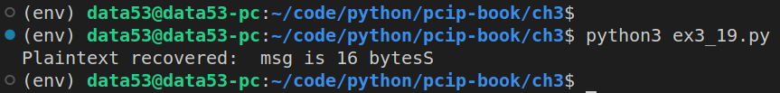

EXERCISE 3.19: RESISTANCE IS FUTILE
Finish the code for the padding oracle attack. We’ve given you the major pieces, but it will still take some work to put everything together. We will do a few things to try and simplify as much as possible. First, pick a message that is exactly a multiple of 16 bytes in length (the AES block size) and create a fixed padding to append. The fixed padding can be any \(16\) bytes as long as the last byte is \(15\) (that’s the whole point of the exercise, right?). Encrypt this message and pass it to the oracle to make sure that code is working.
Next, test recovering the last byte of the first block of the message. In a loop, create a new key and IV pair (and a new oracle with these values), encrypt the message, and call the
lucky_get_one_byte()function, setting block number to \(0\). Repeat the loop until this function succeeds and verify that the recovered byte is correct. Note that, in Python, an individual byte isn’t treated as a byte type but is converted to an integer.The last step in order to decode the entire message is to be able to make any byte the last byte of a block. Again, for simplicity keep the message being encrypted a perfect multiple of \(16\). To push any byte to the end of a block, add some extra bytes at the beginning and cut off an equal number at the end. You can now recover the entire message one byte at a time!
# ex3_19.py
from cryptography.hazmat.primitives.ciphers import Cipher, algorithms, modes
from cryptography.hazmat.backends import default_backend
from cryptography.hazmat.primitives import padding
import os
def sslv3Pad(msg):
padNeeded = (16 - (len(msg) % 16)) - 1
padding = padNeeded.to_bytes(padNeeded+1, "big")
return msg + padding
def sslv3Unpad(padded_msg):
paddingLen = padded_msg[-1] + 1
return padded_msg[:-paddingLen]
class Oracle:
'''
The Oracle class basically models the SSLv3 Servers.
'''
def __init__(self, key, iv):
self.key = key
self.iv = iv
def accept(self, ciphertext) -> bool:
aesCipher = Cipher(algorithms.AES(self.key),
modes.CBC(self.iv),
backend=default_backend())
decryptor = aesCipher.decryptor()
plaintext = decryptor.update(ciphertext)
plaintext += decryptor.finalize()
return plaintext[-1] == 15
def update_key_and_iv(self, ciphertext) -> bytes:
'''
Change the key & iv that ciphertext was created.
'''
aesCipher = Cipher(algorithms.AES(self.key),
modes.CBC(self.iv),
backend=default_backend())
decryptor = aesCipher.decryptor()
plaintext = decryptor.update(ciphertext)
plaintext += decryptor.finalize()
self.key = os.urandom(16)
self.iv = os.urandom(16)
aesCipher = Cipher(algorithms.AES(self.key),
modes.CBC(self.iv),
backend=default_backend())
encryptor = aesCipher.encryptor()
ciphertext = encryptor.update(plaintext)
ciphertext += encryptor.finalize()
return ciphertext
def right_shift_plaintext(self,ciphertext: bytes) -> bytes:
aesCipher = Cipher(algorithms.AES(self.key),
modes.CBC(self.iv),
backend=default_backend())
decryptor = aesCipher.decryptor()
plaintext = decryptor.update(ciphertext)
plaintext += decryptor.finalize()
plaintext = b"-" + plaintext[:-17] + plaintext[-16:]
encryptor = aesCipher.encryptor()
_ciphertext = encryptor.update(plaintext)
_ciphertext += encryptor.finalize()
return _ciphertext
@staticmethod
def start_experiment():
msg = b"msg is 16 bytesS"
msg_padded = sslv3Pad(msg)
o = Oracle(key=os.urandom(16), iv=os.urandom(16))
aesCipher = Cipher(algorithms.AES(o.key),
modes.CBC(o.iv),
backend=default_backend())
encryptor = aesCipher.encryptor()
ciphertext = encryptor.update(msg_padded)
ciphertext += encryptor.finalize()
assert(o.accept(ciphertext=ciphertext))
return ciphertext, o
# This function assumes that the last cipher text block is a full
# block of SSLV3 padding
def lucky_get_one_byte(iv, ciphertext, block_number, oracle):
block_start = block_number * 16
block_end = block_start + 16
block = ciphertext[block_start:block_end]
# Copy the block over the last block.
mod_ciphertext = ciphertext[:-16] + block
if not oracle.accept(mod_ciphertext):
return False, None
# This is valid! Let's get the byte!
# We first need the byte decrypted from the block.
# It was XORed with second to last block, so
# byte = 15 XOR (last byte of second-to-last block).
second_to_last = ciphertext[-32:-16]
intermediate = second_to_last[-1]^15
# We still have to XOR it with its *real*
# preceding block in order to get the true value.
if block_number == 0:
prev_block = iv
else:
prev_block = ciphertext[block_start-16:block_start]
return True, intermediate ^ prev_block[-1]
if __name__ == '__main__':
ciphertext, o = Oracle.start_experiment()
plaintext_recovered = []
# let's suppose the attacker knows that the plaintext is 16 characters/bytes long.
length_of_plaintext_length = 16
while length_of_plaintext_length > 0:
status, byte = lucky_get_one_byte(iv=o.iv, ciphertext=ciphertext, block_number=0, oracle=o)
if (status):
plaintext_recovered.append(byte)
ciphertext = o.right_shift_plaintext(ciphertext=ciphertext)
length_of_plaintext_length -= 1
else:
ciphertext = o.update_key_and_iv(ciphertext=ciphertext)
plaintext_recovered.reverse()
print("Plaintext recovered: ", bytes(plaintext_recovered).decode())Looks like we can recover a whole AES block using this technique as follows:

Note that the code that recovered the plaintext (i.e. the last if condition in the script), accomplished it, without directly accessing o.key. It only used public methods of the Oracle.